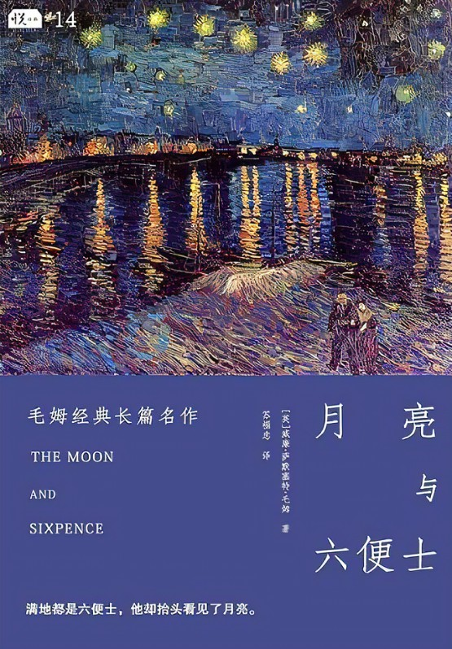
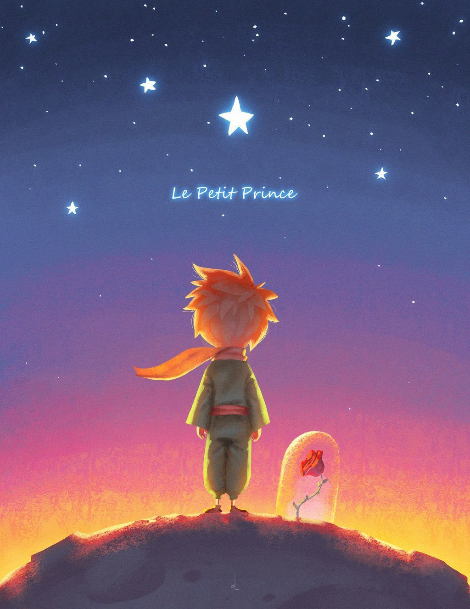
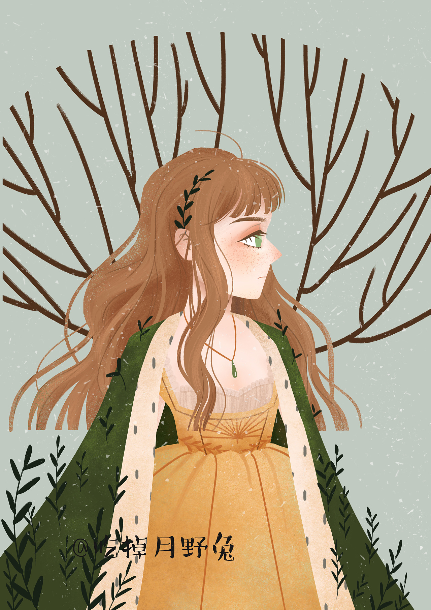

我们每个人生在世界上都是孤独的。每个人都被囚禁在一座铁塔里，只能靠一些符号同别人传达自己的思想；
而这些符号并没有共同的价值，因此它们的意义是模糊的、不确定的。我们非常可怜地想把自己心中的财富传送给别人，
但是他们却没有接受这些财富的能力。因此我们只能孤独的行走，尽管身体相互依傍却并不在一起，既不了解别的人也不能为别
人所了解。
——《月亮和六便士》
当我遇到一个看起来还算明白的大人时，我就试着让他看我一直保存着的我的一号作品。
我想知道他是否能真正理解。但他总是回答我说：“是顶帽子。”于是，我便不再对他讲什么蟒蛇，原始森林，以及星星。
我置身于他的谈话范围。我对他谈起了桥牌，高尔夫球，政治，领带。而大人也就会为认识了一个通情达理的人而感到高兴......
——《小王子》


木月死时，我从他的死中学到一个道理，并将其作为大彻大悟的人生真谛铭刻或力图铭刻在心。
那便是：“死并非生的对立面，死潜伏在我们的生之中。”而直子的死还使我明白：无论熟知怎样的哲理，也无以消除所爱之人的死带来的悲哀。
无论怎样的哲理，怎样的真诚，怎样的坚韧，怎样的柔情，也无以排遣这种悲哀。我们惟一能做到的，就是从这片悲哀中挣脱出来，并从中领悟某种哲理。
而领悟后的任何哲理，在继之而来的意外悲哀面前，又是那样软弱无力—— 我形影相吊地倾听这暗夜的涛声和风鸣，日复一日地如此冥思苦索。
——《挪威的森林》
他经过慢慢追索才来到了这片蓝色的草地上，他的梦想一定已经离得他如此之近以至于他几乎不会抓不到它了。
他不知道他的梦想已经被甩在了他的身后，已经隐藏在了城市以外的冥蒙之中，在那里共和国的黑暗的土地在黑夜中延伸着……。
——《挪威的森林》

 《了不起的盖茨比》
《了不起的盖茨比》